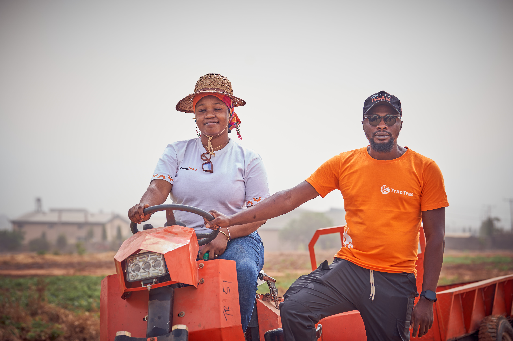

One job, start to finish
See how the work moves.


Find
Tractors nearby, with capacity, status and distance.
Measure
Walk the boundary. The plot is mapped as you go.
Confirm
The measured area is confirmed and attached to the request.
Pay
Pay against the invoice raised for the approved booking.
Complete
The farmer is notified when the work on the farm is done.
TracTrac Plus
The farmer's side of the job.
Machinery discovery, farm measurement and the state of the job, in one app.
Find a machine
Filter by tractor type, brand, capacity and location; see what is available now and what can be booked ahead.
Measure the farm
The mapped plot comes back with its measured area, ready to attach to the request.
Stay on top of the job
Bookings, payments and verification progress in one view.
What you can hire
Machinery for the job you need done.
From land preparation to planting and crop protection, find the machinery and services you need for the work ahead.
Tractors and mechanisation services
Hire a Tractor lists machines by type, brand, capacity and location — utility, compact, row crop, 4WD, crawler, orchard, rotary tiller and garden tractors, from 50 to 135 HP.
Agro-tools, implements and other services
Other Services covers the smaller equipment booked the same way: sprayers, applicators, planters, threshers and the implements matched to a tractor.

Tractor service
Land preparation
Ploughing, harrowing and ridging with tractor-mounted implements.
.jpeg)
Implement
Planting
Seeding and planting with matched implements.
.jpeg)
Agro-tool
Spraying
Crop protection with smaller powered equipment.
.jpeg)
Agro-tool
Irrigation and fertiliser application
Keeping the crop supplied through the season.
.jpeg)
Agro-tool
Harvest and post harvest
Harvesting, threshing and soil testing services.
.jpeg)
Tractor service
Haulage and transport
Moving inputs to the farm and produce to market.
TracTrac Agent
The operational side of the job.
For agents and equipment owners running the work once a booking comes in.
01Bookings
See and manage incoming requests.
02Track your tractor
See where a machine is working.
03Earnings
See completed work and earnings.
Two products
One network. Different paths.
TracTrac Plus helps farmers request the work. TracTrac Agent helps manage what happens next.
A farmer can request a tractor directly.
A farmer without a smartphone, or who wants help, can work through a Booking Agent.
Equipment owners can enlist their machines for hire.
Booking Agents can support verification and connect local demand.

Built for the field
The technology has to work where the work happens.
Location first
Distance sits against every machine, because it decides whether the job is worth taking.
Plots measured on foot
Mapping starts by walking the boundary, on land with no survey behind it.
Availability, not a catalogue
Available now or booked ahead, so a farmer plans against what is real.
People in between
Agents and providers have their own tools, because most bookings still pass through someone trusted.
